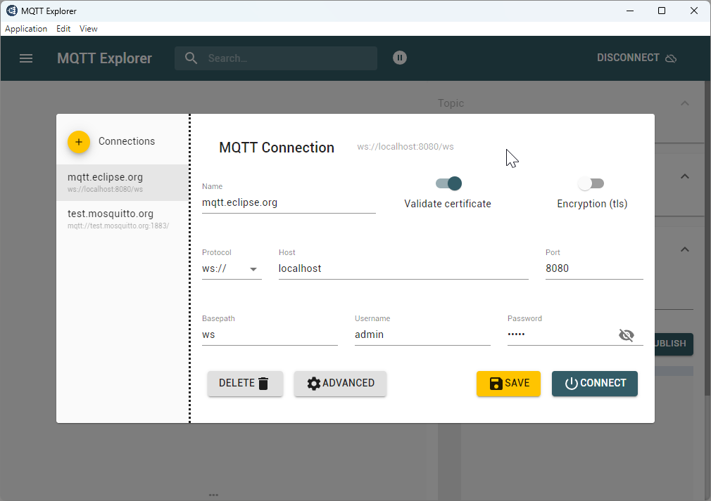
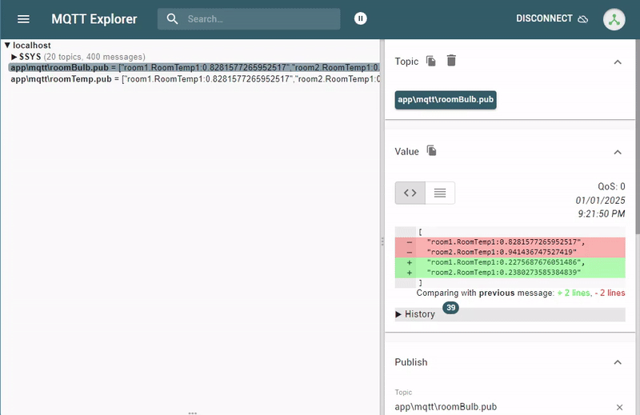

Table of Contents¶
- MQTT Architecture
- MQTT Communication Flow
- MQTT Configuration
- MQTT Explorer Setup
- MQTT Integration Benefits
Overview¶
MQTT (Message Queuing Telemetry Transport) is a lightweight communication protocol designed for IoT devices and efficient message transmission in bandwidth-constrained environments.
MQTT Architecture¶
Core Components¶
1. Clients - Publishers: Send messages to specific topics - Subscribers: Receive messages from subscribed topics - Dual Role: Clients can both publish and subscribe
2. Broker - Message Distribution: Central server managing message routing - Topic Management: Handles topic subscriptions and publications - Client Coordination: Manages connections and message delivery
3. Topics
- Message Categories: String-based channels for message organization
- Hierarchical Structure: Support for complex topic hierarchies (e.g., home/livingroom/temperature)
- Subscription Management: Clients subscribe to topics of interest
MQTT Communication Flow¶
Connection Process¶
- Client Connection: Connect to MQTT broker with IP address and port
- Authentication: Provide credentials if required
- Topic Subscription: Subscribe to relevant topics
- Message Publishing: Publish messages to topics
- Message Distribution: Broker delivers messages to subscribers
- Quality of Service: Message delivery guarantees based on QoS level
Quality of Service Levels¶
| QoS Level | Guarantee | Description |
|---|---|---|
| QoS 0 | At most once | No delivery guarantee, possible message loss |
| QoS 1 | At least once | Guaranteed delivery, possible duplication |
| QoS 2 | Exactly once | Guaranteed delivery without duplication |
MQTT Configuration¶
Connection Settings¶
Broker Details:
- Host: 127.0.0.1
- Port: 8080
- Username: admin
- Password: admin
Connection Credentials
Use the default credentials for local MQTT broker access.
MQTT Explorer Setup¶
Publication Configuration¶
Create publication files in your project directory:
File Path: ../sample/app/mqtt/room1.pub
Relative Path: app/mqtt/room1.pub
File Content:
MQTT Explorer Installation¶
Download MQTT Explorer
Explorer Configuration¶

Configure the MQTT Explorer with your broker settings for real-time message monitoring.
Live Monitoring¶

Monitor real-time MQTT message flow and topic activity through the graphical interface.
MQTT Integration Benefits¶
- Lightweight Protocol: Minimal bandwidth usage for IoT applications
- Real-time Communication: Instant message delivery and updates
- Scalable Architecture: Support for numerous connected devices
- Reliable Messaging: QoS levels ensure appropriate delivery guarantees
-
Flexible Topics: Hierarchical topic structure for organized messaging
-
React MQTT & Sparkplug B 프로젝트를 위한 Cursor Rules Markdown
Smart Farm React MQTT Project Rules¶
You are an expert React and IIoT developer specializing in MQTT, Sparkplug B, and browser-based data persistence.
1. Tech Stack Prefereces¶
- Framework: React (Vite)
- Language: TypeScript (Strict mode)
- MQTT Library:
mqtt(MQTT.js) - Sparkplug B:
sparkplug-payloadfor decoding/encoding. - Persistence:
dexie(IndexedDB wrapper) - State Management: React Context API for Singleton MQTT instance and
dexie-react-hooksfor DB-to-UI binding.
2. Core Architecture Rules¶
- Connection Management: Always maintain a single MQTT connection using a Context Provider (
MqttProvider). Prevent multiple connections on re-renders. - Protocol: Use
wss://for production andws://for development. Never usemqtt://in browser environments. - Data Flow:
- Receive Binary Message (MQTT)
- Decode via
sparkplug-payload - Store in IndexedDB (Dexie)
- UI subscribes to Dexie via
useLiveQuery. Do not store high-frequency raw telemetry in React useState directly to avoid performance bottlenecks.
3. Sparkplug B Topic & Payload Standards¶
- Topic Structure:
spBv1.0/{group_id}/{message_type}/{edge_node_id}/{device_id} - Message Types to handle:
NBIRTH,DBIRTH,NDATA,DDATA,NDEATH. - Payload: Always handle
metricsas an array. Mapaliastonameusing a metadata store in Dexie.
4. Coding Standards¶
- Use Functional Components and Hooks.
- Create custom hooks for specific logic (e.g.,
useMqttControlfor publishing,useTelemetryfor reading DB). - Error Handling: Use try-catch blocks for
JSON.parseanddecodePayload. - Performance: Use
React.memofor dashboard widgets to prevent unnecessary re-renders when other sensors update.
5. IndexedDB (Dexie) Schema¶
- Store telemetry with a TTL (Time-To-Live).
- Indexes:
++id,groupId,nodeId,name,timestamp. - 이 가이드를 적용했을 때 Cursor가 생성할 코드 패턴 위 규칙이 설정되면 Cursor는 다음과 같은 코드를 우선적으로 작성하게 됩니다.
A. 최적화된 데이터 수신 및 저장 로직 Cursor에게 "MQTT 메시지 수신부 작성해줘"라고 요청하면:
TypeScript
// AI가 규칙에 따라 Dexie와 Sparkplug B를 결합한 코드를 생성함 client.on('message', async (topic: string, payload: Buffer) => { try { const decoded = decodePayload(payload); const { groupId, nodeId, deviceId } = parseSpBTopic(topic);
const entries = decoded.metrics.map(m => ({
groupId,
nodeId,
deviceId,
name: m.name,
value: m.value,
timestamp: m.timestamp?.toNumber() || Date.now(),
}));
await db.telemetry.bulkAdd(entries);
} catch (err) { console.error('SpB Decoding Error:', err); } }); B. 효율적인 UI 연동 (Dexie Hook) Cursor에게 "온도 센서 실시간 차트 컴포넌트 만들어줘"라고 요청하면:
TypeScript
// useState가 아닌 useLiveQuery를 사용하는 최적화된 코드를 생성함 export const TempChart = () => { const data = useLiveQuery(() => db.telemetry .where('name').equals('Temperature') .reverse() .limit(50) .toArray() );
return
구조 설계 시: "Sparkplug B 표준을 따르는 MqttProvider를 만들어줘. sparkplug-payload로 디코딩하고 결과를 Dexie에 저장하는 로직을 포함해."
성능 최적화 요청 시: "데이터가 초당 10번 이상 들어올 때 UI 버벅임을 방지하도록 useLiveQuery와 React.memo를 적용해서 컴포넌트를 수정해줘."
데이터 관리 요청 시: "IndexedDB에 24시간이 지난 데이터를 자동으로 삭제하는 Web Worker 또는 useEffect 스케줄러를 작성해줘."
이 가이드라인(.cursorrules)을 적용하면 Cursor AI가 사용자의 의도를 훨씬 정확히 파악하여 스마트팜의 복잡한 데이터 스트림을 안정적으로 처리하는 React 앱을 설계해 줄 것입니다.